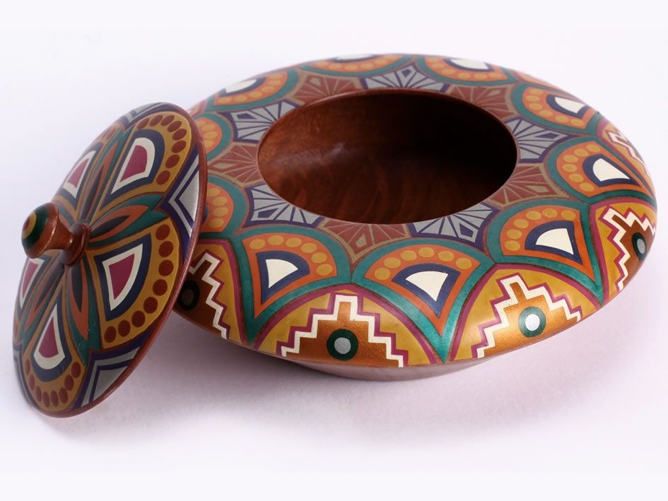
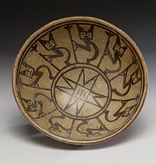
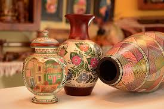

|  | ceramica realizada en nariño. |
|  | El departamento de Boyacá, por tradición chibcha y como método de supervivencia de los indígenas, se ha caracterizado por trabajar la cerámica desde hace muchos años, especialmente los habitantes de Ráquira. |
|  | Ráquira es, hoy en día, un pueblo cuyo cada metro cuadrado está cubierto de cerámica elaborada de forma tradicional por las manos de expertos que de los bojotes de arcilla moldean ollas, jarrones, marranitos y todo tipo de utensilios. |
| existencias | producto | precio |
|---|---|---|
| 20 | 156.000$ | |
| 15 | 230.000$ | |
| 22 | 170.000$ | |
| 18 | 80.000$ | |
| 30 | 75.000$ |